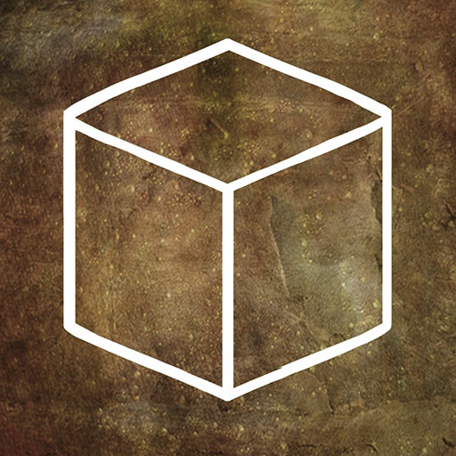

“Go deeper into the Rusty Lake mystery.”
Cube Escape: The Cave é o nono episódio da série Cube Escape e dá continuidade à história do universo Rusty Lake. O jogo acompanha um homem misterioso que está prestes a entrar em uma caverna, enquanto um rosto familiar precisa da ajuda do jogador antes que ele avance cada vez mais fundo em Rusty Lake. Lançado em 2017, o jogo mantém o estilo point-and-click característico da franquia, combinando exploração, objetos escondidos, enigmas e uma atmosfera cada vez mais sombria. A aventura também conecta acontecimentos dos jogos anteriores, incluindo Rusty Lake Hotel e Rusty Lake: Roots.
A história começa quando um homem idoso se prepara para entrar em uma misteriosa caverna localizada em Rusty Lake. Enquanto ele desce cada vez mais fundo, o jogador precisa ajudá-lo a avançar pelos diferentes ambientes e descobrir o que está escondido naquele lugar. Ao mesmo tempo, um personagem familiar precisa da ajuda do jogador para realizar uma tarefa importante. Conforme a exploração continua, a caverna revela diferentes espaços e mecanismos ligados aos mistérios de Rusty Lake. Os acontecimentos também ampliam a história apresentada nos episódios anteriores e conectam elementos de jogos como Cube Escape: The Mill, Rusty Lake Hotel e Rusty Lake: Roots.